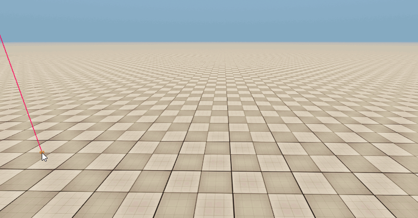

Overview
An Occluder Plane can be used to occlude objects behind the plane. This typically isn't required because occlusion is done automatically through the assets.

This object can be used as a fallback method.
Property | Description |
|---|---|
Height | Specifies how high the occluder plane is. |
Display Filled | Just for visibility in the editor this option defines if the plane should be rendered as filled or not. |
When editing a shape or area, it is possible to snap a vertex to terrain or physicalized objects using Ctrl + Shift + LMB.
This is true for all Area objects, except Occluders.